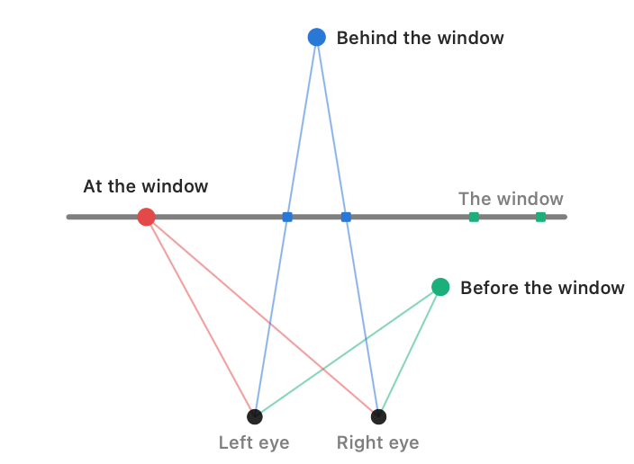

Stereo Dandifier · Help · Links · Support · Privacy
The Stereo Window
A stereo pair is seen as though through a window: the frame of the picture, at the distance at which it is viewed. Every point of the scene appears to stand before that window, upon it, or behind it, according to where its two images lie in the two eyes.

Where a point appears
- At the window — its image lies at the same place in both eyes.
- Behind the window — its image in the right eye lies to the right of its image in the left eye, the lines of sight not yet having met when they reach the window.
- Before the window — its image in the right eye lies to the left of its image in the left eye, the lines of sight having crossed before they reach the window.
The horizontal difference between a point's two images is its disparity: nought at the window, and the greater, either way, the further the point stands from it. The spread of disparity from the nearest point to the farthest is the disparity of the infinity points: the depth the pair holds, wherever its window be placed.
Moving the window
To move one eye's picture sideways against the other adds the same disparity to every point alike: the whole scene is set further behind the window, or brought further out, while its depth within is left precisely as it was. This is what the Parallax node does.
Where the window should stand
It is customary to set the nearest part of the subject at, or a little behind, the window. An object standing before the window and cut by its edge will be found uncomfortable to view, for the frame, which hides part of it, declares it to be behind the window, while its disparity declares it to be before. Should a near object be cut so, it is advisable either to give the pair more parallax, setting the whole scene further back, or to Crop the object out of the frame.